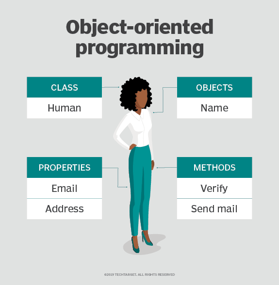

Information technology (IT) is the use of computers to store, retrieve, transmit, and manipulate data or information. IT is typically used within the context of business operations as opposed to personal or entertainment technologies.IT is considered to be a subset of information and communications technology (ICT). An information technology system (IT system) is generally an information system, a communications system or, more specifically speaking, a computer system – including all hardware, software and peripheral equipment – operated by a limited group of users. (src:Wikipedia)
Here are some interesting articles about the topics from IT:
Object-Oriented Programming

OOP stands for Object-Oriented Programming. Object-oriented programming is a programming language model in which programs are organized around data or objects, rather than functions and logic. In other words, it focuses on the objects that developers want to manipulate rather than the logic required to manipulate them. Check out the picture on the left. There you can see the example of OOP in real life.
Principles of OOP
Four principles of OOP are:
Encapsulation
Binds together the data and functions that manipulate the data
Abstraction
Hides internal details and showes functionality
Inheritance
One object acquires all the properties and behaviours of parent object
Polymorphism
A task is performed by different ways
OOP languages
Some of the OOP languages are:
C++
Python
Javascript
Java
Ruby
and many more...
Conclusion
OOP is the most popular programming paradigm currently in use.
Watch this video for more explanation:
Why you should use Node.js?
About Node.js
Everyone is talking about Node taking over the programming world and its great advantages. Node.js is a JavaScript runtime environment. Wikipedia states, that Node.js is an open-source and cross-platform environment to execute code. It’s a relatively new runtime environment and it's approach is very modern.
Advantages of Node.js
The advantages include:
Makes building real-time apps fast
Coding in JS is possible for both, the client and the server
Code executes very fast
It's perfect for microservices
Language
Use
Node.js
49.6%
Angular
39.6%
React
27.8%
.NET Core
27.2%
Spring
17.6%
Django
13.0%
This table shows different programming languages and their use in the world today.